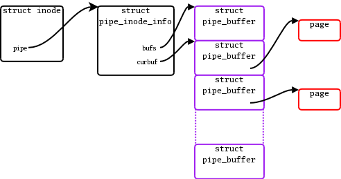

Circular pipes
Pipes now use a circular buffer, as inexpertly shown in the diagram below:

The curbuf pointer (it's an integer index, actually) indicates the first buffer in the array which contains data; nrbufs tells how many buffers contain data. The page structures are allocated when needed, and do not hang around when not in use. Since both readers and writers can manipulate nrbufs, some sort of locking (the pipe semaphore, in this case) is needed to serialize access. The pipe_buffer structure includes length and offset fields, so each entry in the circular buffer can contain less than a full page of data.
Linus says that the new implementation gives a "30-90%" improvement in pipe bandwidth, with only a small cost in latency (since pages must be allocated when data passes through the pipe). The performance improvements are entirely attributable to the larger amount of buffering; readers and writers will block less often when passing data through the pipe. It is a way of speeding things up by throwing memory at the problem.
Better pipe performance was not Linus's main purpose in making this change, however; he has a longer-term plan in mind. The mechanism used to implement circular pipes will evolve into a general mechanism for passing data streams through the kernel. Quite a few changes will be required to get there, and there seems to be no hurry, but there is clearly a long-term goal in mind.
Among other things, the buffers within the circular structure will gain a reference count, allowing there to be multiple readers or writers. The idea here is to implement a sort of in-kernel tee operation which would let data streams be split without additional copying. The example given by Linus is some sort of video capture device which would feed its data into one of these buffers. A process could obtain data from the buffer and display it in an on-screen window; meanwhile, another process would be capturing the stream and writing it to a file somewhere - perhaps with little or no user-space intervention.
The circular buffers will also gain the usual structure full of method pointers which would allow specific users to change how the basic operations are performed. Once that is in place, two new system calls would be added:
- splice(int infd, int outfd);
- This call would use a circular buffer to transfer data from infd to outfd, possibly in a zero-copy manner.
- tee(int infd, int out1, int out2);
- Arranges for data from infd to go to both out1 and out2
Longtime followers of Linux kernel discussions will notice a strong similarity between all of the above and Larry McVoy's splice proposal. Linus's implementation works at a lower level, however, and avoids many of the problems he saw with Larry's approach. Those who are curious about where all this is going may want to look at this explanation from Linus, where he goes into detail and concludes:
There is a remaining practical issue with the current implementation. No
coalescing of data written into a circular buffer is performed. Linus did
things that way because he wants to make life easy for high-bandwidth,
zero-copy streams using these buffers. To that end, nothing touches a page
once it has added to a buffer. The problem is that, in the worst case, a
process writing a single byte at a time to a pipe can consume 16 pages of
memory (with the default configuration) to hold 16 bytes worth of data.
Linus initially noted that nobody doing single-byte I/O should expect good
performance, and suggested that people not do that. It turns out, however,
that this behavior breaks a crucial
application - highly parallel kernel compiles. So coalescing of writes
is likely to be added in the near future.
| Index entries for this article | |
|---|---|
| Kernel | Circular buffers |
| Kernel | Pipes |
| Kernel | splice() |
Posted Jan 14, 2005 14:48 UTC (Fri)
by macc (guest, #510)
[Link]
some years ago linus was rather specific that
mux, filters, ...
Posted Jan 14, 2005 16:45 UTC (Fri)
by giraffedata (guest, #1954)
[Link] (1 responses)
Also, one doesn't normally want the size of pipe to increase without bound, so I'd say a parameter to limit the size is necessary. I think another parameter should choose between this and the old method.
I don't understand why this is being called "circular." The old method is more circular. In that, the same bytes of buffer get used over and over in a simple circular fashion.
Posted Jan 20, 2005 5:27 UTC (Thu)
by sweikart (guest, #4276)
[Link]
-scott
Posted Apr 12, 2005 18:58 UTC (Tue)
by DanWeber1 (guest, #29231)
[Link]
Dan
isn't this rather similar to streams in SYSV?Circular pipes
there would be no streams in the kernel.
reading SysV docs from Motorola for their embedded
boards MVME147 ( 1991..) on the internals of the
distributed VME Rack Systems was a very good read.
I suppose the 30-90% performance gain is for applications that do huge multi-page reads and writes with high latency. For the common case, for which the existing pipe implementation was designed, where there is a steady stream of about 80 byte reads and writes, it is most probably slower due to the additional overhead and the loss of locality of reference.
pipe performance
pipe performance
> For the common case, for which the existing pipe implementation was designed,
> where there is a steady stream of about 80 byte reads and writes ...
Actually, this is not the common case. The common case is that the programs writing to (and reading from) the pipe use stdio; when writing to a device that's not a tty, stdio defaults to block buffering. The block size used by stdio should work well with Linus's scheme (and if it doesn't, it would probably make sense to change it).
These work for named pipes/fifos right?Circular pipes